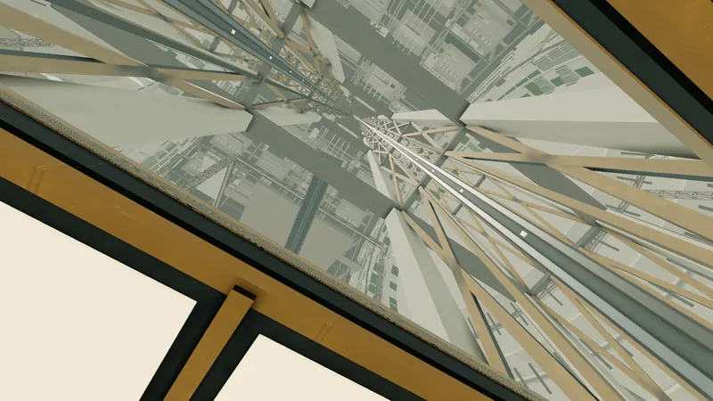

Artificial gravity: how fast to spin, and how big to build
Spin a ring and the floor pushes back on your feet. That push is weight. The radius and the spin rate set how much of it you get, and how well people tolerate the spin. Enter a radius and either a spin rate or a target gravity to get rim speed, head-to-foot gradient, walking Coriolis and the published comfort band, then compare five historical designs with Concordia.
Concordia is a design study set in 2045, not a real or planned project: a fully modelled 1 g settlement you can explore in a browser, built to show what the physics on this page looks like at city scale. It is the worked example in each section, and its numbers carry a design value tag. Everything else stands on the sources listed at the bottom.Model: rigid rotor, uniform spin, no air drag on falling objects. g₀ = 9.80665 m/s² throughout.
§ 1 · Quick reference
The formulas, with one worked value each
ω in rad/s, r and R in m, v in m/s, rpm = rotations per minute
Quantity
Formula
Concordia design value
Gravity at radius r
g = ω²r = v²/r
0.0626² × 2,500 = 9.80 m/s² = 1.00 g
Spin rate
rpm = 60ω / 2π
0.0626 rad/s = 0.598 rpm
Rim speed
v = ωr
156.6 m/s (564 km/h)
Period
T = 2π / ω
100.3 s per turn
Radius for a target g
r = g / ω²
2,500 m at 0.0626 rad/s
Gravity at height h above the floor
g(h) = g₀ (1 − h/R)
0.82 g at the 450 m sky
Head-to-foot gradient
Δg / g = height / R
1.8 / 2,500 = 0.072 %
Coriolis on a walker
a = 2ωv, as a share of local weight 2v/(ωr)
1.4 m/s: 0.0179 g (1.8 % of weight)
Weight of a rider moving along the rim
(ωR ± v)² / R, + spinward, − antispinward
0.66 g at 100 km/h antispinward; 1.33 g at 90 km/h spinward (metro, 2,455 m)
Radius for 1 g at a given rpm
1 rpm 894 m · 2 rpm 224 m · 3 rpm 99 m · 4 rpm 56 m · 6 rpm 25 m · 10 rpm 9 m
0.598 rpm needs 2,500 m
The rule-of-thumb radii use g₀ = 9.80665 m/s². Globus and Hall's table (section 6) uses a slightly different g and gives 895.47 m at 1 rpm. The Coriolis ratio is twice the relative speed over the habitat's tangential speed (Hall's SpinCalc states the same ratio).
Concordia in one line: radius 2,500 m, ω 0.0626 rad/s, 0.598 rpm, period about 100.3 s, rim speed about 156.6 m/s, 1.0 g at the ground design value. A browser-explorable design study, set in 2045: concordia.davidveksler.com.
§ 2 · Spin calculator and spin chart
How fast must it spin for 1 g?
Pick a preset or type your own. The orange marker on the chart follows your inputs; each dot is a design from section 7.
Spin rate
-
Angular speed ω
-
Period
-
Rim speed
-
Gravity at the rim
-
Head-to-foot gradient
-
Walking Coriolis
-
Comfort band (Globus and Hall 2017)
-
NASA SP-413 limit
-
Radius for 1 g at this rpm
-
Up to 2 rpm2 to 44 to 66 to 30 (training)Above 30: no recommendationDesignYour design
Spin chart: radius (log) against spin rate (log). Diagonals are constant gravity, so every design near the 1 g line gets its weight from the same trade of radius against rpm. Stripes are the Globus and Hall bands; the dashed line is the SP-413 limit of 1 rpm. Concordia sits at the large, slow end, next to O'Neill's 1974 Model 4.
§ 3 · How spin makes weight
What you feel is the floor
Nothing pulls you toward the rim. Seen from outside, a free object keeps moving in a straight line while the rotating floor swings round and meets it.
The push is the weight. The floor must accelerate you around the circle, so it pushes you toward the axis with a = ω²r. Standing on Earth works the same way: the ground pushes up on you. Globus and Hall make this point to explain why spin can stand in for gravity.
Worked example. Concordia's rotor has a floor radius of 2,500 m and turns at 0.0626 rad/s design value. Then ω²r = 0.0626² × 2,500 = 9.80 m/s², or 0.999 g. Its period is 2π / 0.0626 = 100.3 s.
Same 1 g, four sizes. Radius decides everything except the weight. A 10 m centrifuge at 1 g spins at 9.46 rpm and the head of a 1.8 m person weighs 18 % less than the feet. Concordia's gradient is 0.072 %.
1 g at four radii (person 1.8 m, walking 1.4 m/s; computed with the calculator's spinDesign)
Radius
Spin rate
Period
Rim speed
Head-to-foot gradient
Walking Coriolis
10 m
9.46 rpm
6.34 s
9.9 m/s
18 %
0.283 g (28 % of weight)
56 m
4.00 rpm
15.0 s
23.4 m/s
3.2 %
0.120 g (12 %)
224 m
2.00 rpm
30.0 s
46.9 m/s
0.80 %
0.060 g (6.0 %)
2,500 m Concordia design value
0.598 rpm
100.3 s
156.6 m/s
0.072 %
0.0179 g (1.8 %)
Concordia's own page on the same physics: Artificial gravity, with a dropped-coin demonstration.
§ 4 · Gravity fades with height
Why does weight fall as you climb?
Gravity is ω²r, so it falls in a straight line from the floor to zero at the axis. Climb a tower and you move to a smaller circle that turns at the same rate, so you go slower and weigh less.
Gravity and air pressure at height h above the floor of a Concordia rotor design value
Height above ground
Radius
Gravity g₀(1 − h/R)
Air pressure vs ground
Ground
2,500 m
1.00 g (0.999)
100 %
250 m
2,250 m
0.90 g
97 %
450 m, the artificial sky
2,050 m
0.82 g (0.819)
95 %
1,000 m
1,500 m
0.60 g
91 %
1,250 m
1,250 m
0.50 g
90 %
2,000 m
500 m
0.20 g
87 %
Axis
0 m
0 g
86 % (87.6 kPa)
Air pressure: the atmosphere turns with the rotor, so pressure rises with radius. The column is an isothermal model, p = p₀ exp(−ω²(R² − r²) / (2 × 287 J/(kg K) × 293 K)), from 101,325 Pa at the ground. It is a derived estimate, not a Concordia specification.

Looking up through the sky aperture, 450 m up, where weight is 0.82 g. Rendered in the Concordia simulation, which has a gravity overlay.
§ 5 · Coriolis, gradients and the inner ear
Why is the floor not just a floor?
Walk spinward and you get heavier; walk antispinward and you get lighter. Walking with the spin adds to your speed in inertial space, and the floor must supply more inward force: weight is (ωr + v)²/r. The extra is the Coriolis term 2ωv. A walker at 1.4 m/s on Concordia's ground gains or loses 0.0179 g, 1.8 % of body weight design value. The same walk at 2 rpm (224 m) changes weight by 0.060 g, 6.0 %.
Any motion not parallel to the axis is deflected. Motion along the axis has no Coriolis term. Moving up or down (radially) deflects sideways: the SP-413 torus example is a 0.55 m jump from the mid-deck at 1 rpm, which lands about 5.3 cm to one side. Check: sideways shift = 2ω × (area under the height-time curve) = 2 × 0.1047 rad/s × (⅔ × 0.55 m × 0.69 s) = 5.3 cm.
The inner ear is the problem, not the weight. Turning your head out of the plane of rotation stimulates the semicircular canals in a way the brain does not expect, which causes dizziness and nausea. Globus and Hall find that motion sickness in rotation is often tied to head movement, that effects decline with radius, and that they are much weaker in an otherwise weightless environment than in lab rotors on Earth.
The effect shrinks as the habitat grows. At fixed gravity, the Coriolis share of weight is 2v/(ωr) = 2vω/g, so it is proportional to ω and falls as 1/√r. Quadruple the radius and the walking effect halves.
The gradient matters for standing, not walking. Head-to-foot gradient is height/R: 18 % at 10 m, 3.2 % at 56 m, 0.80 % at 224 m, 0.072 % at Concordia design value. SP-413 sets no gradient limit, so any threshold you quote here is a design judgment, not a NASA number.
Concordia's train-weight page shows the same rule on its metro at 100 km/h: 0.66 g one way, 1.33 g the other.
§ 6 · Comfort limits
How much spin can people tolerate?
Four sets of numbers, oldest first in each table. They disagree, and the disagreement is the point: the data come from short-radius rooms and small centrifuges.
NASA SP-413 (1975 study, published 1977): the design criteria
Space Settlements: A Design Study, chapters 3 and 4
Criterion
Value
Where
Gravity
0.95 ± 0.05 g (text: between 0.9 g and 1 g, "an arbitrary 10 percent variation")
Ch. 3 text; Table 3-3. The web transcription of Table 3-3 prints "± 0.5", an evident typo.
Rotation limit
1 rpm, upper limit for the principal living quarters
Ch. 3; Table 3-3 lists ≤ 1 rpm
Adaptation
People can eventually adapt to rates below 3 rpm after prolonged exposure; frequent changes of rate may inhibit adaptation
Ch. 3
Coriolis example
0.55 m jump from the mid-deck lands about 5.3 cm to one side
Ch. 3, figure 3-1
Gravity gradient
No limit stated
Ch. 3 does not discuss it
Relaxed case
0.85 ± 0.15 g at 1.9 rpm: torus major radius 209 m, shield 1.0 Mt
"Space Settlement Population Rotation Tolerance", NSS Space Settlement Journal, June 2017
Band
Up to
Residents
Visitors
Radius for 1 g
1
2 rpm
No problem
Little adaptation
224 m
2
4 rpm
No problem
Some training and/or a few hours to perhaps a day or so
56 m
3
6 rpm
Unlikely to be a problem
May need extensive training and/or multiple days; particularly susceptible people may have great difficulty
25 m
4
30 rpm
Adaptation achieved with specific training
The radius is so small it is hard to imagine anyone living there permanently or raising children
1.0 m
The authors call these recommendations quite conservative, because the underlying data come from rotation radii of a few metres and negative effects decline as radius grows. Caveats they list: most studies had 10 or fewer subjects, only adults, a few weeks or less, and were mostly done on Earth. The radius column is derived with g₀ = 9.80665; the paper's own radius-for-1 g table follows.
Radius needed for 1 g (Globus and Hall 2017 table, metres)
rpm
1
2
3
4
5
6
7
8
9
10
radius (m)
895.47
223.87
99.50
55.97
35.82
24.87
18.27
13.99
11.06
8.95
The paper notes that beyond about 6 rpm each extra rpm saves very little radius (6 m between 6 and 7 rpm).
Five historical comfort charts (as tabulated by Hall's SpinCalc)
Design criteria in the literature; "not stated" is the source's own "?"
Chart
Min radius (m)
Max spin (rpm)
Min rim speed (m/s)
Min gravity (g)
Max gravity (g)
Hill and Schnitzer 1962
not stated
4
6
0.035
1.0
Gilruth 1969
12
6 (optimum 2)
not stated
0.3
0.9
Gordon and Gervais 1969
12
6
7
0.2
1.0
Stone 1973
4
6
10
0.2
1.0
Cramer 1985
not stated
3
7
0.1
1.0
The rim-speed column is a minimum: a faster rim keeps the Coriolis-to-gravity ratio (2 × relative speed / rim speed) small. Nobody in this table goes above 6 rpm; SP-413's 1 rpm is stricter than all five.
The experiments behind the numbers
Swipe the table sideways to see every column.
Rotation and artificial-gravity experiments
Experiment
Setup
Finding
Source
Pensacola Slow Rotation Room, 1969
Ten men aged 18 to 30; room 15 ft (4.57 m) diameter, 7 ft high; speed raised in 1-rpm steps to 10 rpm
Six of the ten reached 10 rpm, four could not; the authors recommend that rotation may safely commence at 2 rpm
Reason and Graybiel 1969, NTRS 19700005540
Graybiel 1977, same room
Slow rotation room at 1.0, 3.0, 5.4 and 10 rpm
1.0 rpm: even highly susceptible subjects symptom-free or nearly so. 3.0 rpm: symptoms, no significant handicap. 5.4 rpm: only low-susceptibility subjects performed well. 10 rpm: pilots with no air-sickness history had not fully adapted in 12 days
as quoted by Hall's SpinCalc
Lackner and DiZio 2003
Repeated identical movements in rotation
Sensory-motor adaptation to 10 rpm can come relatively easily and quickly when subjects repeat the same movement
as quoted by Hall's SpinCalc
Gemini XI tether, 14 Sept 1966
Capsule tethered to an Agena by a 100 ft line, slowly rotated with thrusters
About 0.00015 g of artificial gravity. The rotation rate is not stated in the NASA page
NASA Gemini XI mission page
NASA bed-rest centrifuge pilot, 2007
15 men, 21 days of 6° head-down bed rest; 8 got 1 h/day on a 3 m radius centrifuge (2.5 g at the feet, 1.0 g at the heart)
Beneficial effects on bone, muscle and cardiovascular function, no harmful effects on vestibular, immune or cognitive function; 153 of 160 sessions completed. A pilot, not conclusive
Paloski and Young, NTRS 20070016631
JAXA mouse centrifuge on the ISS, 2017
12 male mice for 35 days, microgravity group vs an artificial 1 g group
Microgravity mice lost femur bone density and soleus and gastrocnemius weight; the 1 g mice matched the ground control
Shiba and others 2017, Scientific Reports
§ 7 · Rotating habitat designs compared
Stanford torus, O'Neill cylinder, Island One, Kalpana One, Concordia
Oldest first. d means derived by this page from the sourced radius and spin rate (g₀ = 9.80665); "not stated" means the source gives no value. Click a design's chip in section 2 to load it into the calculator.
Swipe the table sideways to see every column.
Six designs, one row each
Design
Year, source
Shape and size
Radius (m)
Spin (rpm)
Rim g
Rim speed (m/s)
Population
Shielding
Band
O'Neill cylinder, Model 4
1974, Physics Today, Table 1
Cylinder pair, each 32 km long (the text says about 16 miles), 4 miles across
3,200
0.526d
0.99d
176d
0.2 to 20 million for the pair (the top figure is the ecological limit with conventional agriculture)
Atmosphere, soil and steel structure; 7.5 t/m² averaged surface density of the structure
1
Stanford torus
1975, NASA SP-413, ch. 4 and 5
Torus: major radius 830 m, tube 130 m across (65 m minor radius), six spokes 15 m across. Design gravity 0.95 ± 0.05 g
830 (895 outerd)
1
0.93 to 1.00d
87 to 94d
10,000
Passive slag shield separate from the habitat, rotated far below 1 rpm or not at all; 9.9 Mt at 4.5 t/m²
1
Island One (Bernal sphere)
1976, L5 News, Sept 1976
Sphere, equator "nearly a mile in circumference"; Earth-normal gravity at the equator, falling to zero at the poles
about 256d
about 1.9
1.03d
51d
about 10,000
Non-rotating shell of industrial slag; mass not stated
1
Island Three
O'Neill, as summarized by NSS
Counter-rotating pair, each about 20 miles long and 4 miles across
about 3,220d
not stated
not stated
not stated
several million
not stated
n/a
Kalpana One
2007 (revised), Globus and others
Cylinder: radius 250 m, length 325 m, spin capped at 2 rpm
250
at most 2 (1.89d for 1 g)
1.00d at 1.89 rpm
49.5d
3,000
Up to 10 t/m² of lunar or asteroid regolith inside the hull, about 7 Mt
1
Concordia design value
Design study set in 2045
Four habitation rotors, each radius 2,500 m and length 2,500 m, plus a counter-rotating industrial rotor
2,500
0.598
1.0
156.6
about 1 to 1.2 million (all four rotors)
Stationary shield outside the rotating pressure vessels; thickness not fixed (worked example: 1 m at 1.6 t/m³, about 750 Mt)
1
Concordia industrial rotor design value
same
Radius 2,300 m, length about 3,500 m; industry and agriculture, not housing
2,300
about 0.42
about 0.45
about 101
not residential
Open framework with pressurized modules
1
O'Neill's four stages (1974, Table 1)
The table in "The Colonization of Space": comfort pushes radius up as population grows
Model
Length (km)
Radius (m)
Period (s)
Spin (rpm)
Population (double unit)
Earliest date
1
1
100
21
2.86d
10,000
1988
2
3.2
320
36
1.67d
100,000 to 200,000
1996
3
10
1,000
63
0.95d
0.2 to 2 million
2002
4
32
3,200
114
0.53d
0.2 to 20 million
2008
Why the stages scale together: each stage is sized for about 1 g, so the period grows as √radius. Model 1's 21 s is as printed; exactly 1 g at 100 m needs 20.1 s. The dates are the paper's "earliest estimated" dates, now long past.
Bernal 1929. J. D. Bernal's The World, the Flesh and the Devil describes a spherical shell "ten miles or so in diameter" for twenty or thirty thousand inhabitants (p. 23, as quoted in arXiv 1806.01322). It is generally described as a non-rotating globe; the spinning "Bernal sphere" is the 1976 Island One, which borrowed the name. This page did not check the book's text for the question of spin.
What each design traded
Stanford torus: SP-413's 1 rpm limit sets the 830 m wheel (1 g at 1 rpm needs about 894 m), and a separate 9.9 Mt passive shield surrounds it.
Island One: gravity is Earth-normal at the equator and falls to zero at the poles, so only a band of the interior is near 1 g.
Kalpana One: accepts 2 rpm (a Globus and Hall band 1 value) to get a 250 m hull for 3,000 people, and puts the regolith inside the hull, so the hull must be stronger.
O'Neill's ladder: across the four stages the radius grows 32-fold and the spin falls from 2.86 to 0.53 rpm while population grows from 10,000 to as much as 20 million.
Concordia design value: 0.598 rpm is below every limit in section 6, so it buys a 0.072 % gradient and 1.8 % walking Coriolis, at the cost of rotors 5 km across. Concordia's glossary entry for its direct ancestor: the O'Neill cylinder.
§ 8 · Field guide: life inside a spinning world
Eleven things that are different when the floor is a wall
Each card: the surprise, the number, why. Numbers are for Concordia's 2,500 m rotor design value unless a card says otherwise.
The ground curves up and over your head
183°
Walk 8 km along the rim and you have turned 183°: your feet point where your head was. One lap is 2π × 2,500 m = 15.7 km, a 95 minute walk at 1.4 m/s.
The street is a circle seen from inside, so it never feels like a slope.
A train can weigh 0.66 g one way and 1.33 g the other
0.66 g · 1.33 g
On the metro's 2,455 m rail head, a rider at 100 km/h against the spin weighs (ωr − v)²/r = 0.658 g; at 90 km/h with the spin, 1.326 g. Standing still: 0.98 g.
Riding with the spin adds to your speed in inertial space, so the seat must push harder.
Drop it 2 m: 0.64 s later it lands 5.3 cm antispinward of the point below. From 100 m the offset is 19.7 m after 4.7 s. The same 2 m drop lands 18 cm aside at 2 rpm (224 m) and 1.07 m aside in a 10 m centrifuge at 1 g.
The coin keeps the tangential speed of the height it left, ω(R − h), which is slower than the floor's. Exact: t = √(R² − r₀²) / (ωr₀), lag = R (ωt − arccos(r₀/R)), with r₀ = R − h.
In Concordia's glider model (a 120 kg hang glider, estimated design values, not a real aircraft), least-power flight with the spin takes about 2.0 kW at the ground and about 250 W at 2,000 m, where weight is 0.20 g.
The wing carries a fifth of the load. At 14 m/s it feels 1.19 g with the spin and 0.83 g against it at the ground.
If all four rotors turned the same way, turning the 21 km station 1° a day would take about 4.1 MN at each end of the hull. With counter-rotating pairs as designed it takes about 4.5 kN, roughly 1,000 times less.
A body with net angular momentum resists being turned like a gyroscope; pairs cancel it.
Throw a ball spinward and it presses toward the floor
1.27 g · 0.76 g
At 20 m/s (45 mph) along the rim, a ball behaves as if its weight were 1.27 g thrown spinward and 0.76 g antispinward: (ωr ± v)²/r. At 4 rpm (56 m radius) the same antispinward throw weighs about 0.02 g, because its speed in inertial space is almost zero.
Rule: spinward curves floorward, antispinward lifts off. Players who adapt to it have a home-field advantage.
Pouring looks normal, until the radius shrinks
1.1 cm
A 20 cm pour is pushed aside by 0.17 cm at Concordia, 1.1 cm at 4 rpm (56 m) and 2.7 cm in a 10 m centrifuge at 1 g.
The same fall geometry as the coin. It ignores splashing and air drag, so it is a lower bound on what a liquid does.
The air is thinner near the axis
86 %
The air turns with the rotor, so pressure falls from the ground to the axis: about 95 % of ground pressure at the 450 m sky and about 86 % (87.6 kPa) at the axis, in an isothermal model at 293 K.
Pressure follows p₀ exp(−ω²(R² − r²) / (2 Rgas T)); the same centrifugal field that makes weight sorts the air.
Comfort pushes radius up; hoop stress pushes back. A 2 rpm ceiling means at least 224 m; O'Neill notes that with increasing size a larger fraction of the total mass is in the supporting cables. Concordia's air alone loads its wall with P × r = 101,325 Pa × 2,500 m = 253 MN per axial metre, and the tension bands carry about 410 MN per axial metre in total design value. Concordia's structure page has the load budget.
The shield does not spin with the living space. SP-413's torus shield is rotated far below 1 rpm or not at all; Island One's slag shell does not rotate; Kalpana One's authors list "rotating hulls with minimal clearance to non-rotating shield mass" among the failure modes of the older designs and put the regolith inside the hull instead. Concordia keeps shielding on a stationary outer truss, hundreds of metres outside the pressure vessels design value.
No wheels. At these loads the rotor rides on non-contact magnetic bearings at both ends, with emergency mechanical catchers that never touch in normal operation; the stationary structure only aligns, damps and passes utilities design value.
Spin-up takes days to weeks. The first full-speed rotation is planned in small increments with dwells to find resonances design value.
Balance is a continuous job. People, vehicles and cargo move mass around the rim, so each rotor carries distributed trim mass (water and movable ballast) under continuous mass-properties tracking design value.
Rotors come in counter-rotating pairs. O'Neill coupled two cylinders into a system with zero axial angular momentum so its axis stays pointed at the Sun without thrusters. Each Concordia rotor stores about 1 × 10¹⁷ N m s; its pairs net to zero within 0.1 % design value. Counter-rotation on Concordia.
§ 10 · Common mistakes
Ten things people get wrong about spin gravity
"Bernal's 1929 sphere spun." It is generally described as a non-rotating globe ten miles or so across. The spinning "Bernal sphere" is Island One (1976). Bernal's original text was not checked for spin; see the note under the designs table.
"SP-413 set a gravity-gradient limit." It did not. SP-413 sets 0.95 ± 0.05 g, a 1 rpm limit and an adaptation statement below 3 rpm, and does not discuss the gradient.
"Rpm alone sets gravity." Radius matters as much: g = ω²r. Two rpm gives 1 g at 224 m but only 0.045 g at 10 m.
"A small centrifuge at 1 g feels like Earth." A 10 m one needs 9.46 rpm, your head weighs 18 % less than your feet, and walking Coriolis is 28 % of body weight.
"The curved floor feels like a slope." Underfoot it feels flat: "down" is always toward the axis. It only looks like a hill when the floor is not at constant radius.
"Coriolis only matters if you move up or down." Any motion not parallel to the axis is deflected, including walking along the rim (heavier spinward, lighter antispinward). Motion along the axis is the one direction with no Coriolis term.
"One big cylinder can be pointed anywhere." Net angular momentum makes it a gyroscope. Four same-way Concordia rotors would need about 4.1 MN at each end to turn 1° a day; pairs cut that about 1,000 times design value.
"Gravity is the same at head and feet." The difference is height/R: 18 % at 10 m, 3.2 % at 56 m, 0.072 % at 2,500 m.
"Spin gravity is free once spinning." The spin energy was paid for once, but bearings, trim mass and balancing as people move are continuing costs (section 9).
"L5 is stable, so nothing needs stationkeeping." The Earth-Moon L4 and L5 points are stable only in the idealized problem; the Sun's perturbation can empty the region (Slíz-Balogh and others simulate test particles near L5, arXiv 1910.07466). Concordia's design assumes a controlled trajectory with active stationkeeping design value.
Concordia is a design study set in 2045, built so you can stand at 1 g, ride the metro that weighs 0.66 g one way, and climb to the 0.82 g sky, all in your browser. This page only links to it; nothing here loads the simulation.
arXiv 1806.01322 (quoting Bernal 1929, p. 23); J. Slíz-Balogh and others, arXiv 1910.07466 (Earth-Moon L5 under solar perturbation).
Concordia design values: the science pages and fact sheet of concordia.davidveksler.com (a design study; the spin functions on this page are ported from its widget core).
David Veksler is a Principal AI Engineer in Denver. He leads agentic AI engineering at Antech, a Mars company, and builds AI platforms for regulated financial firms. This page was produced by a governed, multi-agent Claude Code pipeline with a git audit trail. How it's builtCase studies